输出¶
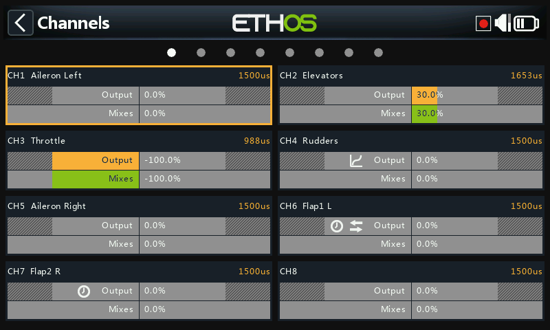
输出是混控设置的纯"逻辑"与物理世界之间的分界线——舵机、连杆、舵面、执行机构、传感元件。在这里，行程端点、反向、中立点以及校正曲线会被调整到模型在机械上真正需要的状态。每个输出通道对应接收机的一个舵机输出口（在默认协议设置下，CH1 → 1 号舵机插口）。
Ethos 以百分比方式工作，但舵机最终是由以微秒为单位的 PWM 脉宽驱动的：
| % | µs |
|---|---|
| −150% | 732 |
| −100% | 988 |
| 0% | 1500 |
| 100% | 2012 |
| 150% | 2268 |
Warning
没有生效混控的通道会输出中立值（0% / 1500µs）——这包括那些仅有的混控当前处于未激活状态的通道。请确保你实际使用的每个通道始终有一个生效的混控为其提供数值。尤其对于油门通道，中立值意味着半油门。
输出屏幕为每个通道显示两条条形图：下方（绿色）的条表示混控器为该通道计算出的数值，上方（橙色）的条表示经过输出处理后实际发送给接收机的数值（同时以 % 和 µs 显示）。Min/Max 限制显示为橙色条上灰化的部分。当前未被发送到射频模块的通道背景颜色更深。当某通道的 Direction、Curve、Slow 或 Balance 设置被改为非默认值时，该通道上会出现小图标，便于一眼识别非默认通道。
Tip
在混控设置或飞行模式屏幕上长按 ENT 可直接跳转到此处。
编辑通道¶
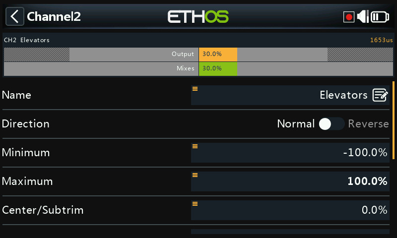

点击通道即可打开它。顶部的预览图显示混控数值（绿色）与输出数值（橙色）的对比，并用一个白色小标记表示 Min/Max 点。
- Name（名称）——可编辑。
- Direction（方向）——反转该通道的输出，通常用于反转舵机的转动方向。在通道上显示为双箭头图标。它不会影响为其提供数值的混控，也不会交换 Min/Max 限制。
- Min/Max（最小/最大）——永远不会被覆盖的硬性限制——设置它们以避免机械卡死。它们的作用相当于行程端点/增益设置：减小它们会缩小行程量，而不是产生削顶。默认值为 ±100%，最大可调至 ±150%。调整过程中，当前正被推向的那一端会以粗体显示（例如向前推升降舵摇杆，Max 数值会加粗，以确认你正在设置的是这一端）。

!!! warning "SBUS 冗余" 使用 SBUS 的冗余方案无法让舵机移动超出约 ±125%。Min/Max 字段本身具有非对称的范围（−150–0% 和 0–150%）——如果用变量来驱动它们，请为该变量设置完全相同的范围，或者启用 Ignore range（参见信号源选项），否则自动范围转换将产生意料之外的数值。如果主接收机的输出超过 125% 且它进入失控保护，通过 SBUS 接管的冗余接收机会将其限制回 125%。
- Center/Subtrim（中心/微调偏移）——偏移输出，通常用于对中舵机摇臂；行程端点不受影响。
!!! warning 不要用 subtrim 做大幅度偏移——它会在舵机响应中引入明显的差动。对于超出精细对中范围的调整，请改用偏移混控。
- PWM center（PWM 中心）——类似 subtrim，但它会移动整个舵机行程带，包括硬性限制，实际上是在舵机内部完成的，因此不会在通道监视器上显示出来。这样可以将机械对中与微调彼此分离。
- Curve（曲线）——为通道附加 Expo 或自定义曲线（可用已有的或新建，设置后带有 Edit 快捷入口），用于校正实际响应——例如让左右襟翼保持精确一致。在通道上显示为曲线图标。
- Slow up/down（上/下减速）——减缓输出对输入变化的响应速度，单位为从 0→100% 所需的秒数——例如用普通比例舵机驱动的收放起落架的减速。在通道上显示为时钟图标。（与 slow 不同的延时（delay）功能可在逻辑开关中找到。）
交换通道¶
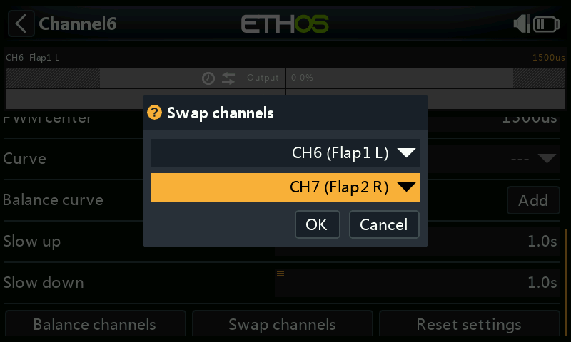
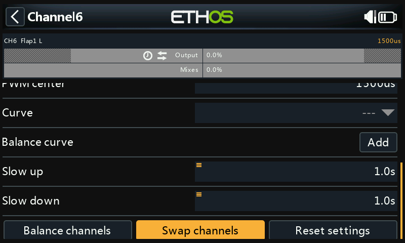
交换两个输出通道。对话框打开时会预填当前通道；选择另一个通道并确认——交换立即生效，并且所有引用这两个通道的混控都会相应更新。
重置设置¶
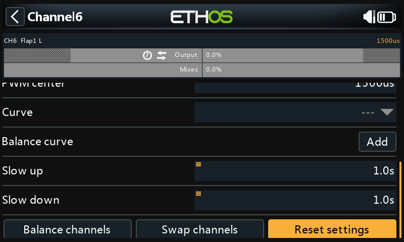
将通道上的所有参数清除为默认值——在将某个通道改作其他用途之前很有用，并带有确认对话框以防误操作。
平衡通道¶
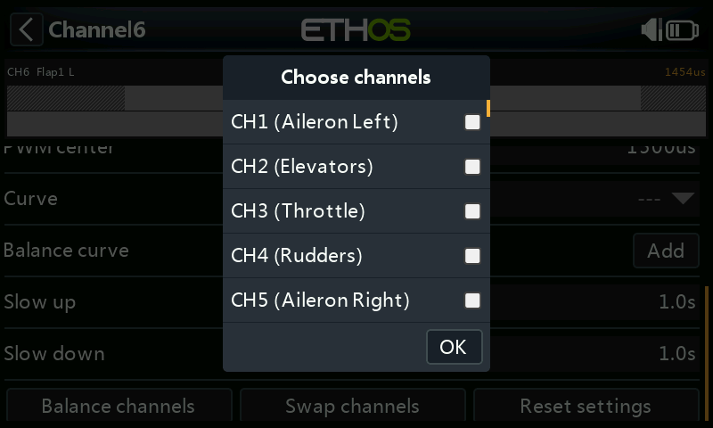
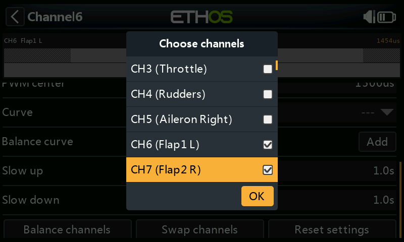
平衡一对（或最多 4 个）通道，使它们同步动作——例如襟翼动作不一致会引起不希望的横滚；多发模型上油门不平衡会引起不希望的偏航。Ethos 会为每个所选通道构建一条差动平衡曲线；对比各曲线点上舵面的实际位置，即可将它们调整为一致，最终获得完美同步的舵面。
平衡之前，请按顺序完成：
- 设置舵机方向，使行程方向正确。
- 在混控处于中立位置时，可选择用 PWM center 将舵机摇臂调正。
- 设置 Min/Max 和 Subtrim。
- 配置其他所有曲线。
- 配置 Slow。
- 然后在整个行程范围内进行平衡与均衡。
使用方法：选择要平衡的通道以及它们的显示顺序——
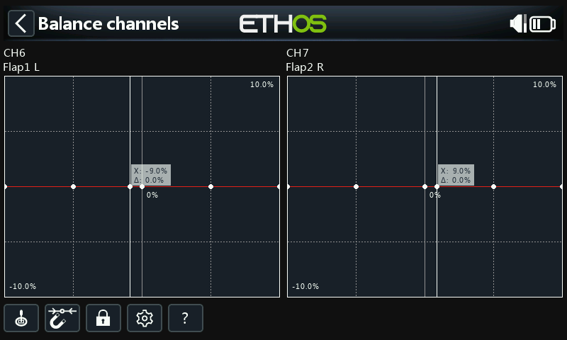
——X 轴为混控输出，Y 轴为平衡调整的差动量。点击某通道的图形（或选中它并按 ENT）即可编辑其平衡曲线；编辑过程中按 PAGE 可在各通道之间切换：
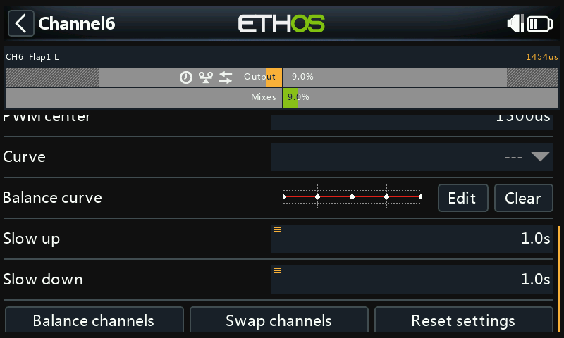
编辑器控制项：
- Source（信号源）——通常是该混控自身的信号源，或任何其他方便使用的模拟输入；Auto analog input 会将你移动的第一个摇杆/滑块/电位器作为 X 轴，图形和模型本身都会随之响应。
- Magnet（磁吸）——自动将旋转编码器的调整吸附到 X 轴上最近的曲线点：
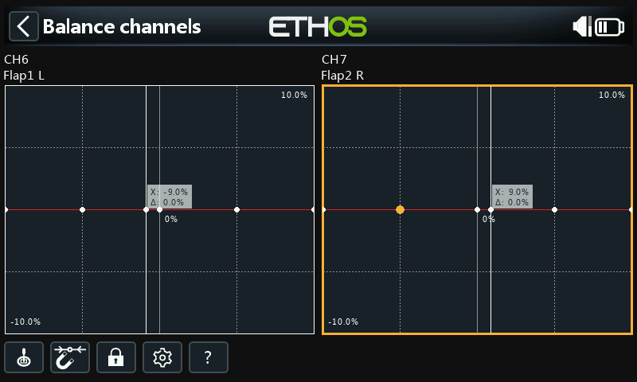
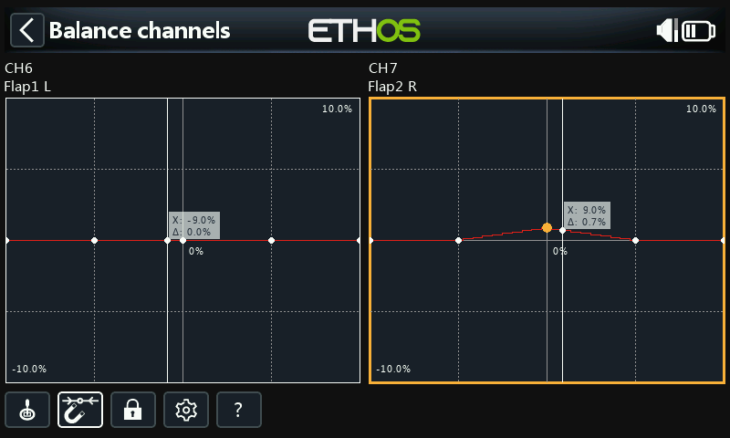
仍然需要移动输入，使 X 与某个曲线点对齐后才能对其进行调整。
- Lock（锁定）——点击其图标或在图形编辑模式下按
ENT进行切换；锁定所有输入，这样你可以松开摇杆，在调整曲线的同时观察舵面。 - Configuration（配置）——更改每个通道的点数（全部或单独设置）以及每条曲线是否平滑。
- Help（帮助）（
?，也可按MDL键）——打开内置帮助。
多通道：最多可同时平衡 4 个通道——
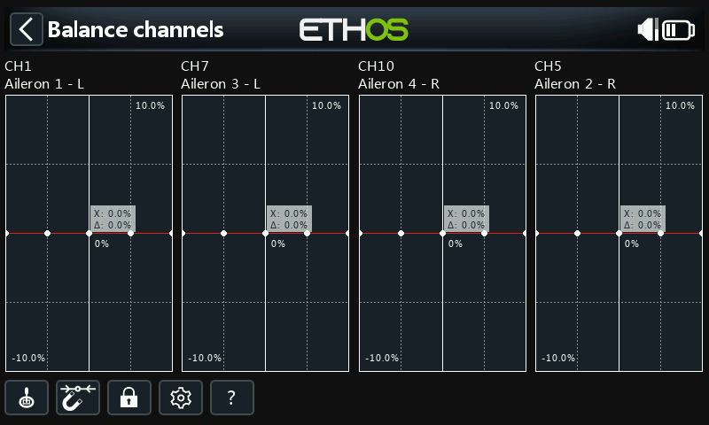
设置完成后，可在该通道自身的配置页面中查看、编辑或清除平衡曲线——通道图形上会有一个平衡图标标记（如果 Direction 也是非默认值，则还会同时显示方向图标）。